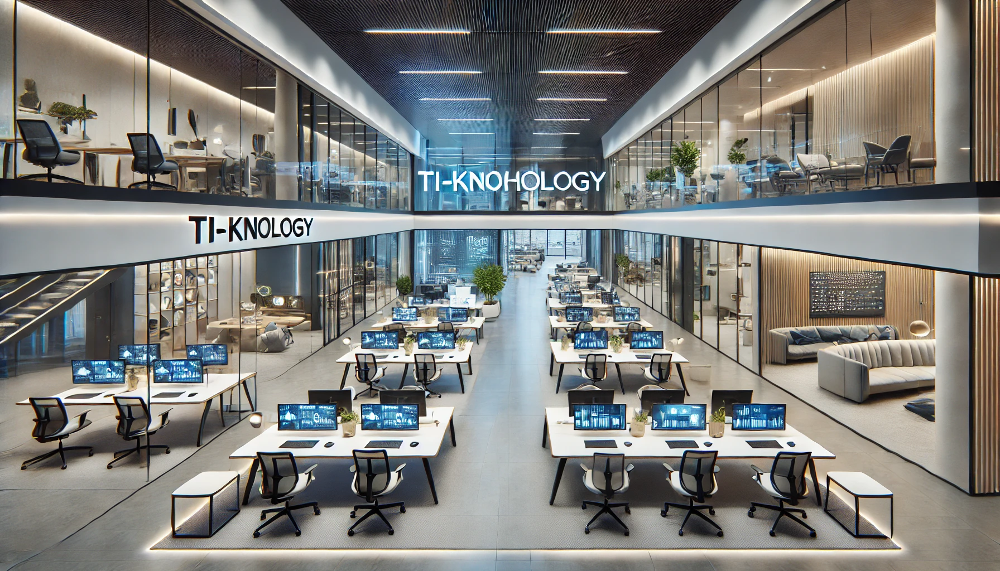
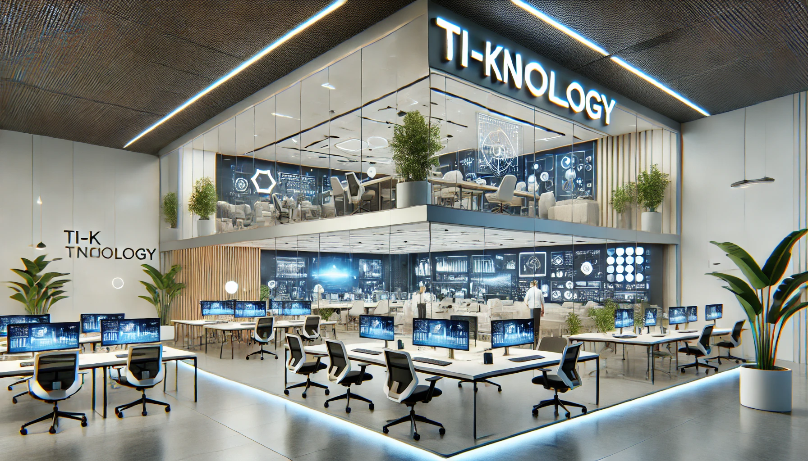
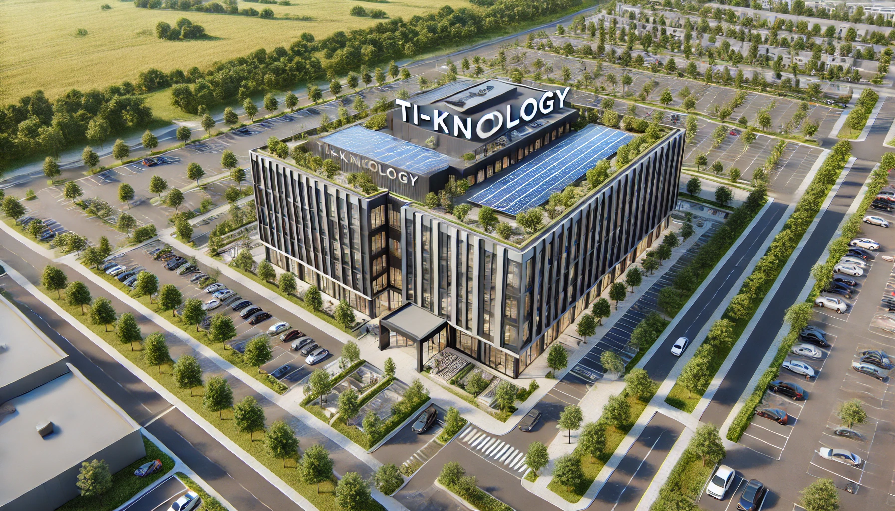
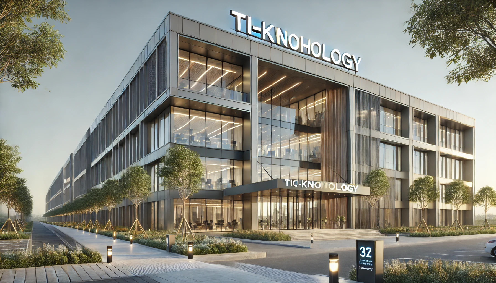

Fundada em 2010 por Thiago Menezes Duarte, Luísa Carvalho Santana e Pedro Henrique Vasconcelos, a TI-Knology surgiu com a missão de impulsionar a transformação digital das empresas brasileiras. Os três fundadores uniram suas habilidades complementares para criar uma empresa que oferecesse soluções tecnológicas inovadoras e acessíveis.
Sobre Nós
Nossas Instalações




Serviços Oferecidos
| Desenvolvimento de Software Personalizado | |
| Consultoria em Transformação Digital | |
| Soluções em Nuvem | |
| Inteligência Artificial e Aprendizado de Máquina | |
| Soluções de Internet das Coisas (IoT) |
Fundadores
| CTO | Thiago Menezes Duarte | |
| CXO | Luísa Carvalho Santana | |
| CEO | Pedro Henrique Vasconcelos |